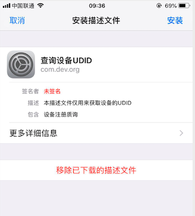
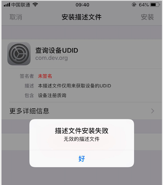

相关名词及简介
| 名称 | iOS描述 | Android描述 |
|---|---|---|
| UDID (Unique Device Identifier) | 设备的唯一标识符，在iOS5之前，获取设备唯一标识都是采用UDID，iOS6苹果废弃了该方法，提供了IDFA | 用来标示设备的唯一标识符。该UDID是获取UUID后，写入.so文件生成。即使APP重装，值也不变，除非root手机（普通用户做不到） |
| IDFA (Identifier For Advertising) | 广告标识符，1.iOS6面世，广告标示符是由系统存储，同一个设备上的所有App都会取到相同的值，是苹果专门给各广告提供商用来追踪用户的。 2.用户可以限制广告跟踪 3.系统重置或者设置中还原广告标识符会重置 | |
| IDFV (Identifier For Vendor) | 应用开发商标识符，通过CFBundleIdentifier（DNS反转格式）的前两部分生成。例如：com.text.one和com.text.two得到的IDFV是一样的。如果用户将属于此开发商的所有应用卸载，则IDFV的值会被重置。 | |
| UUID (Universally Unique Identifier) | 通用唯一识别码,目前最广泛应用的 UUID，是微软公司的全局唯一标识符GUIDs。 UUID每次生成的值都是唯一且不一样的。iOS可以通过结合钥匙串来区别应用唯一性 | 同iOS |
| IMEI (International Mobile Equipment Identity) | 国际移动设备身份码的缩写。是由15位数字组成的“电子串号”，它与每台手机一一对应，每个IMEI在世界上都是唯一的,写在主板上，重装APP不会改变。iOS5之后被禁止。 | GSM设备返回的，并且是写在主板上的，重装APP不会改变IMEI。Android 6.0以上系统需要用户授予read_phone_state权限，如果用户拒绝就无法获得。 |
| Mac地址(Media/Medium Access Control) | 硬件标识符，包括WiFi mac地址和蓝牙mac地址。iOS7之后被禁用（同时禁用的还有OpenUDID） | 硬件标识符，包括WiFi mac地址和蓝牙mac地址。Android 6.0之后被禁止，若获取则会被判定为有害应用 |
| OpenUDID | 在UDID被禁用后的一个开源方案，原理是利用剪贴板在同一设备上的不同应用间共享一个OpenUDID，iOS7对剪贴板进行了限制，功能被废掉了。 |
在iOS5之后，iOS为了获取设备的UDID，苹果提供了利用Safari的方式。
创建类型为 xml 的文件（ep：mobileconfig.xml）并配置以下参数
⚠️ 接收数据的接口地址 该地址用来接收并解析客户端返回的xml数据
1 | <?xml version="1.0" encoding="UTF-8"?> |
最终显示的配置文件如下所示

Python 模块
UDID xml数据解析
该接口地址对应 mobileconfig.xml 文件中服务端接收解析数据的地址，解析完成之后重定向到结果页面
1 | @main.route('/app/parse_udid', methods=['GET', 'POST']) |
⚠️需要使用301重定向，否则会提示描述文件安装失败

UDID 获取和结果展示
- udid 不存在时显示获取udid按钮
- udid 存在且不为0是显示udid结果
- udid 为0时下载配置文件（注意Content-Type配置）
python接口模块
1 | @main.route('/app/udid', methods=['GET', 'POST']) |
页面配置模块
1 | {% extends "bootstrap/base.html" %} |
以上内容参考以下文章:
Apple ConfigurationProfileExamples